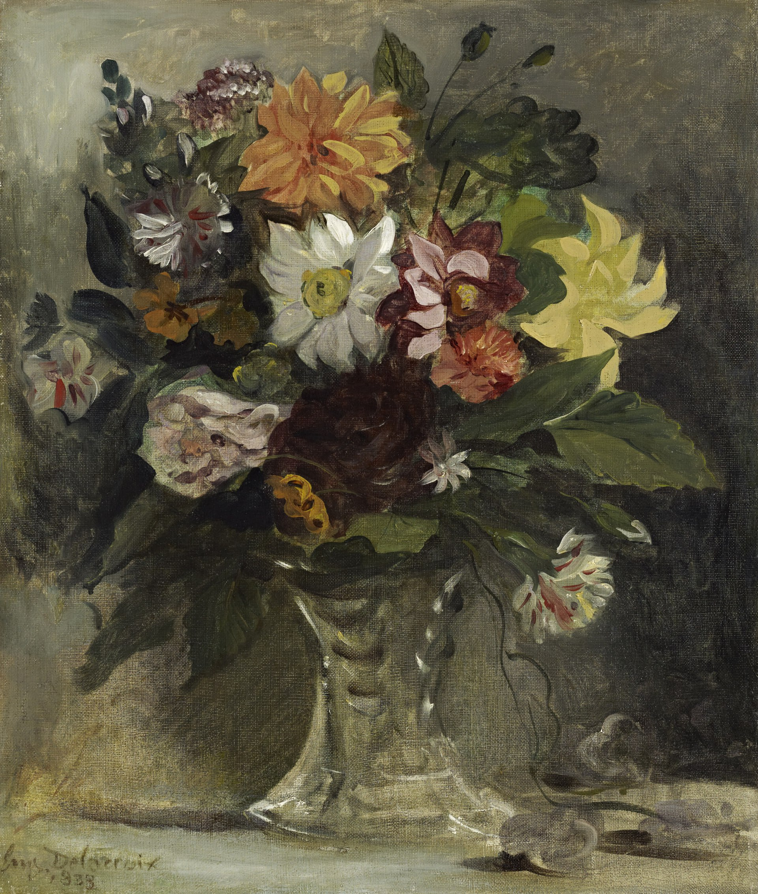

Фердинан Виктор Эжен Делакруа
Bouquet de fleurs (Ваза с цветами), 1833

📄 Холст 🖌 масло 📏 57,7 x 48,8 см
🏛 Национальная галерея Шотландии, Эдинбург
Картина, вероятно, принадлежала близкому другу Делакруа Фредерику Вийо, коллеге-художнику и куратору Лувра. По словам Вийо, картина была написана в Шампрозе, недалеко от Фонтенбло. На ней изображена хрустальная ваза с цветами, в основном георгинами. Это самая ранняя из сохранившихся цветочных работ Делакруа, и она написана более свободно, чем другие, более амбициозные работы того времени. Делакруа был ведущим художником романтической школы, ставившим цвет превыше линии, в отличие от более классических работ Энгра.
Происхождение
- 25 сентября 1941 г. выставлена на аукцион и продана Музею Вальрафа-Рихарца
- С 1980 г. в коллекции национальной галереи Шотландии
Источник: https://www.nationalgalleries.org/art-and-artists/5661